| |
Silverwood/Lagoon Road Trip
Silverwood Lagoon
 All right. So the first half of this road trip was basically us exploring a bunch of new stuff that I have never done before. Silverwood was a new park for me. Yellowstone and Grand Tetons were new national parks I'd never been to. Hell, I even got 4 new state credits. Washington, Idaho, Montana, and Wyoming (Wow. I have 39 out of 50 states. Only 11 more to go). But now, we're back at a place that I'm VERY familiar with. Lagoon. Seriously, once we reached Salt Lake City, a switch flipped on my brain where everything suddenly looked familiar. Looking foreward to enjoying another fun day at one of the most underrated parks in America.
All right. So the first half of this road trip was basically us exploring a bunch of new stuff that I have never done before. Silverwood was a new park for me. Yellowstone and Grand Tetons were new national parks I'd never been to. Hell, I even got 4 new state credits. Washington, Idaho, Montana, and Wyoming (Wow. I have 39 out of 50 states. Only 11 more to go). But now, we're back at a place that I'm VERY familiar with. Lagoon. Seriously, once we reached Salt Lake City, a switch flipped on my brain where everything suddenly looked familiar. Looking foreward to enjoying another fun day at one of the most underrated parks in America.
Fun little fact. If you want to get on Cannibal first thing, they have a special line that they escort to Cannibal first thing. So get in that line if you want to Cannibal when the park opens.
 I had already ridden Cannibal on my last trip. But AJ still hadn't done it yet. And hey, it's a really good ride.
I had already ridden Cannibal on my last trip. But AJ still hadn't done it yet. And hey, it's a really good ride.
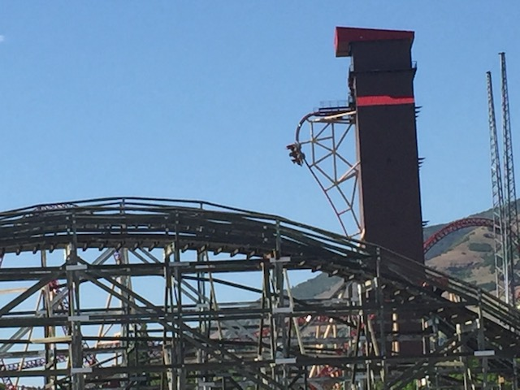
And I have good news. Cannibal is now even better than it was when it first opened! =)
 Not only does the elevator lift have far more theming, but the ride itself is showing more forces. So it's getting better with age. And it's only 2 years old! I'm really looking foreward to seeing how it is in a couple years from now.
Not only does the elevator lift have far more theming, but the ride itself is showing more forces. So it's getting better with age. And it's only 2 years old! I'm really looking foreward to seeing how it is in a couple years from now.
GAH!!! SELFIE STICK!!! BURN IT WITH FIRE!!!
My wife has not brought home the bacon. And she doesn't really mean it. =(
 All right. Time for more rides on Wicked.
All right. Time for more rides on Wicked.
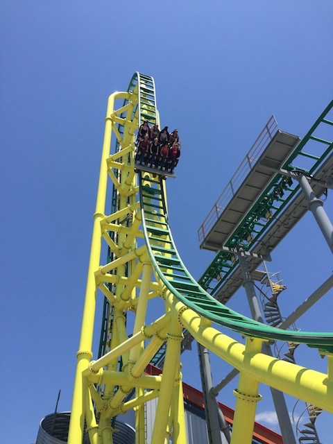
It's a shame there haven't been more coasters like Wicked built, cause this really is a fun ride that I genuinely like a lot.
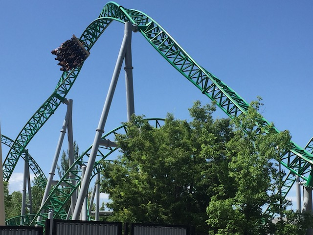
WEE!! HEARTLINE SPIN TWISTINESS!!!
OK. What the hell is this stuff? There's this fluff just blowing in the wind around here. It looks like it came from...stuffed animals. Is there a stuffed animal genocide going on here?
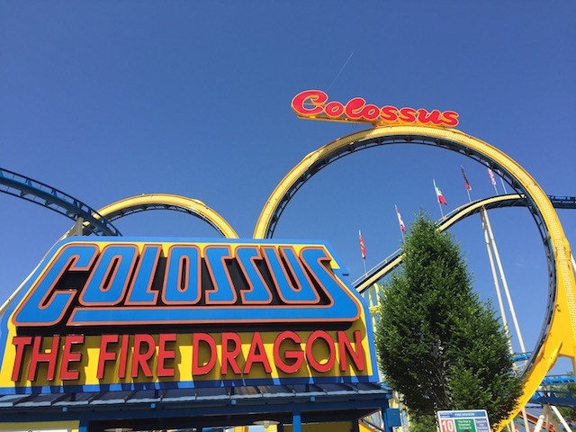
OK. We haven't talked about Collosus Fire Dragon. Still gotta do that.
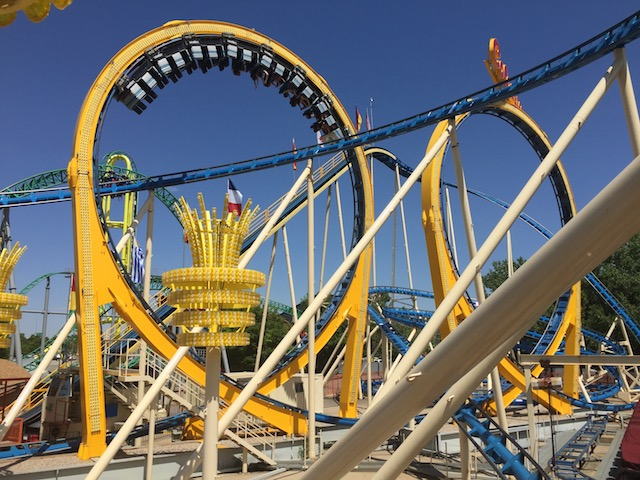
I know it's not nearly as flashy as all the cool new B&Ms or RMCs or all the hot new sh*t. But rides like Collosus: Fire Dragon still really pack a punch and kick ass.
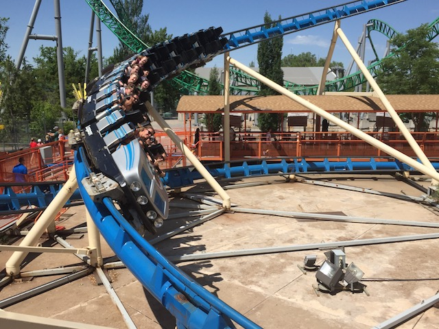
Not only are the loops super strong, but the laterals are brutal and fun as well.
You wanna get dizzy? Well, they have a spinning coaster here. Spider.
WHOA!! They gave Spider a paint job. And it looks FANTASTIC. Total improvement. It looks like X2 now.
Still surprised that all the Spider clones are so much weaker than Spider *cough*Undertow*cough*.
 Hey. You want more brutal laterals? Well, here's a Wild Mouse. Enjoy.
Hey. You want more brutal laterals? Well, here's a Wild Mouse. Enjoy.
 Now for some sad news. Wild Mouse didn't seem nearly as strong as it did in past visits.
Now for some sad news. Wild Mouse didn't seem nearly as strong as it did in past visits.
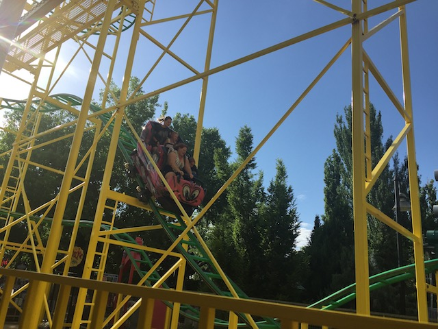
Now don't get me wrong. Wild Mouse is still very strong and easily without a doubt, the best Wild Mouse in America. But those super strong and brutal European Mice, like the one at Hansa Park for example? Yeah. They've surpassed the Lagoon Mouse.
Moving on to explore the rest of Lagoon.
Ooh. Glad to see that the river is still flowing in early June.
 Still my favorite rapids ride in America and the 2nd best I've been on in total.
Still my favorite rapids ride in America and the 2nd best I've been on in total.
 Waterphobes beware. Rattlesnake Rapids will soak you, just in case you missed the waterfall.
Waterphobes beware. Rattlesnake Rapids will soak you, just in case you missed the waterfall.
You're welcome family that we spared from the wrath of the waterfall by taking the hit (Seriously. It amazes me how people go on water rides and don't want to get wet. I know how common it is. I used to freaking work on a rapids ride).
Holy Crap! They're showcasing the Swan Princess here!? I'm amazed that that thing is still relevant. I remember seeing that movie as a kid in the 90s, but then I forgot about it until the Nostalgia Critic reviewed it. Surprised they aren't showcasing something much better here.
How dare you forbid me from playing in the river!
We were hoping to try a new local place in Salt Lake City that we'd never gone before. Unfortunetly, it's Sunday. And Salt Lake City pretty much shuts down on Sundays. It's like Chick Fil A (F*cking Mormonism). So we just had to settle with In'N'Out. I don't have a problem with it. I'm a big fan of it, like most Californians. I really like it (Hell, I just had it for dinner last night). I just want to try something new. That's all.
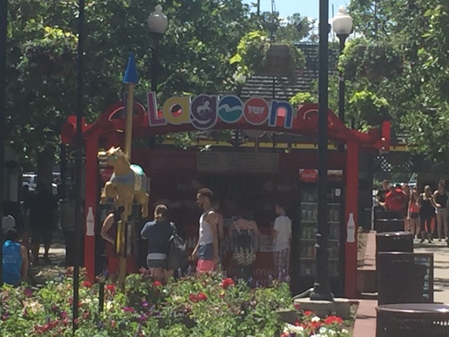
Back from lunch. Let's keep on enjoying this park.
 Sh*t! I forgot about Roller Coaster. Gotta ride that while we're here.
Sh*t! I forgot about Roller Coaster. Gotta ride that while we're here.
 I know I've said this before, but this roller coaster is much better than it looks!
I know I've said this before, but this roller coaster is much better than it looks!
 OK. I'll admit that this is no Timber Terror. But there's still some decent airtime on this ride.
OK. I'll admit that this is no Timber Terror. But there's still some decent airtime on this ride.
 *gasp* THERE'S A STOP SIGN!!! STOP AT THE STOP SIGN ROLLERCOASTER!!!
*gasp* THERE'S A STOP SIGN!!! STOP AT THE STOP SIGN ROLLERCOASTER!!!
This is the ride that doesn't end. Yes, it goes on and on my friends. Some people, started riding it, not knowing what it was. And they'll continue riding it forever just because...
Why no Lagoon. I'm not bribing the ride operators (what the hell would you bribe them for anyway?). I'm just speaking to them and expressing my approval of their job performance with my cash. Free Speech. ;)
Aww. Jet Star 2 is closed. Really hoping it reopens, because that ride is just insane. =(
So happy that these Air Races are catching on as they're extremely fun flat rides.
Hmm. Never noticed the artwork on the walls of Air Race. I like it.
 YAY!!! JET STAR 2 OPENED BACK UP!!!
YAY!!! JET STAR 2 OPENED BACK UP!!!
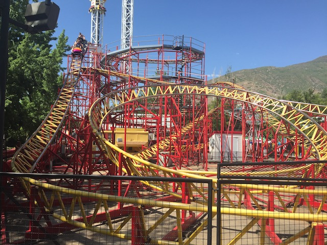
Still one of the more intense roller coasters I've ridden and definetly one of the more underrated ones.
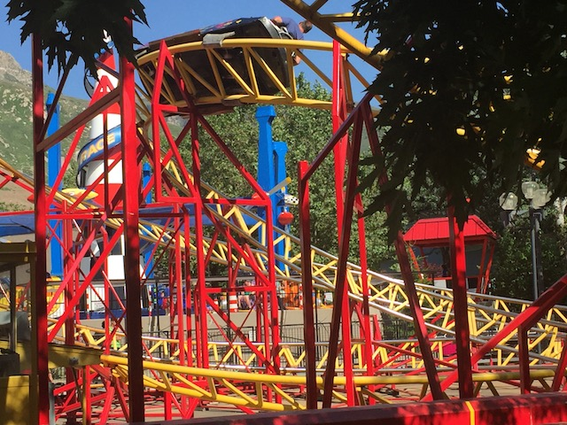
Though I gotta warn you. Jet Star 2 is F*CKING BRUTAL!!! The brake run literally punched me in the gut. And it HURT!!! Oh well. I still love it.
After seeing how good the Tilt a Whirl at Silverwood was, we decided to check out the Lagoon Tilt a Whirl (I think it might've been like the ONLY flat ride at Lagoon I still hadn't ridden). Needless to say, it didn't spin as much and I was dissapointed. =(
Aww. Samauri is closed today. =( Well, at least SolSpin opened up at Knotts and I can do that.
 I'm always down for a custom made Roller Skater.
I'm always down for a custom made Roller Skater.
 ♫Everybody's gone surfin'! Surfin' Utah Aye!♫
♫Everybody's gone surfin'! Surfin' Utah Aye!♫
The high winds made these flyers so much better.
Let's check out the ferris wheel. Always good to get more ariel views.
If you're wondering why these photos are in black and white, apparently I must've hit some sort of setting or filter on my phone which made me accidentally take these photos in black and white. Honestly, I kind of like them. Oh, and their Space Shot is fun.
YAY!!! LAGOON!!!
 Ooh! Love the Cannibal shots from up here.
Ooh! Love the Cannibal shots from up here.
 Hello Cannibal Riders.
Hello Cannibal Riders.
 Seriously. That Lagoon Roll is really cool and totally throws you off.
Seriously. That Lagoon Roll is really cool and totally throws you off.
Yeah. You can see how crowded Lagoon is (It's not that bad).
Hmm. We have to go to the other side of the park. Should we walk or should we take the skyride?
I'm not sure what it is about this skyride that is just so damn relaxing.
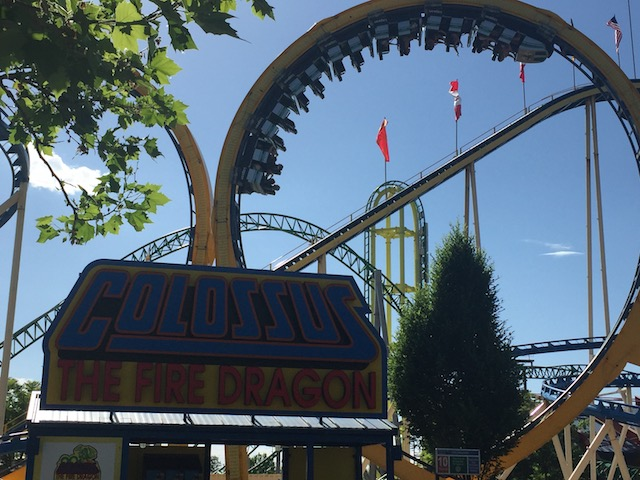
That's enough relaxing. We need more positive Gs and to get knocked down.
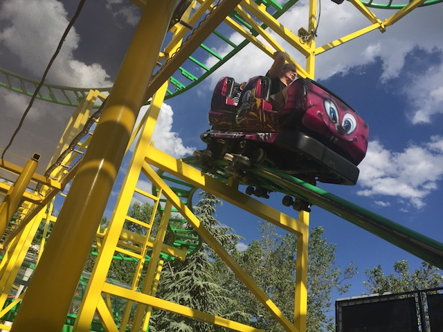
TAKE THE HOUSE!!!
OK. We got a ton of flipping on the Rock-O-Plane. =)
Just cruising along on the train.
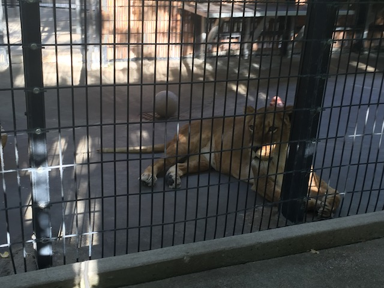
Well, we saw lions. Now we just need tigers and bears. Oh my!
I know that Lagoon gets some criticism from animal groups over their train ride. And while I HATE the PETA groups, I do have to say that the animals at Lagoon don't seem to be in the best condition. Cause let's face it. Lagoon is no Sea World.
Ooh. Fun facts about Cannibal.
OK. We still haven't checked out Pioneer Village. Let's see if we can discover anything new here.
Do you repair Vibrams?
Pioneer Village has sugar on stand by for all the addicts (Confirmed Sugar Addict here).
We just saw a bunch of bison at Yellowstone. You're going to have to do better than peacocks if you want to impress me Lagoon.
Which part of the cow am I eating again?
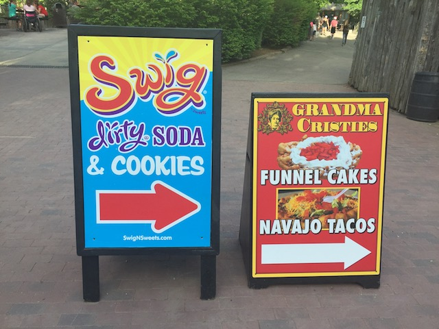
Hmm. Navajo Tacos and Custom Sodas. Sounds like a good dinner to me.
The Navajo Tacos are really good. It's a taco, so it's really good. And the frybread shell makes it even better. Seriously, frybread is really good. And as for the Swig Dirty Soda, they're basically just the Soda version of Cocktails. Honestly, I really loved them. It really tasted like a soda non-alcoholic cocktail. Hell, just add Vodka, and you have a real cocktail. I think I'll try it. Apparently, Swig Dirty Soda is a local Utah chain and can only be found in the area. I definetly hope they spread because it was really good (I'm gonna try and recreate the drink I got and just add Vokda).
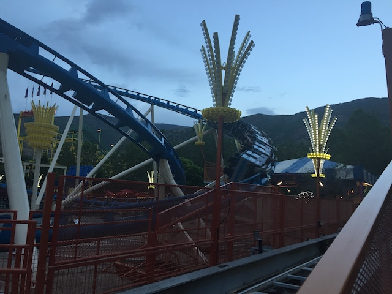
Might as well get some more Schwarzkoph goodness in while I'm still here.
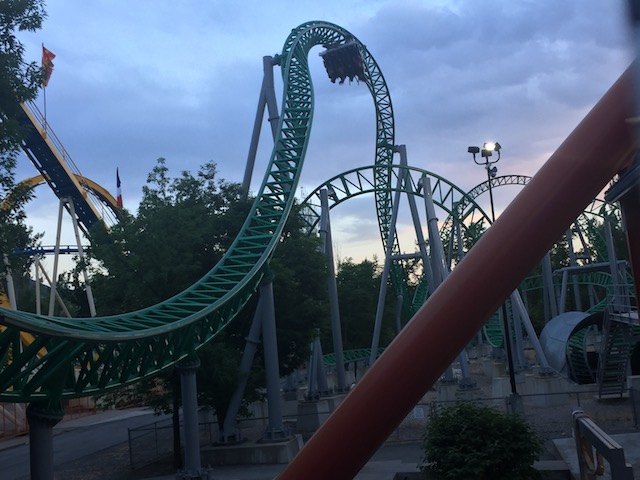
Some night rides on Wicked sounds good right now.
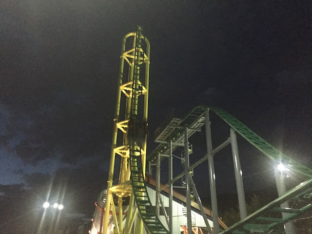
Ooh. Pretty night time Wicked shot.
I think you know why we got back on the skyride.
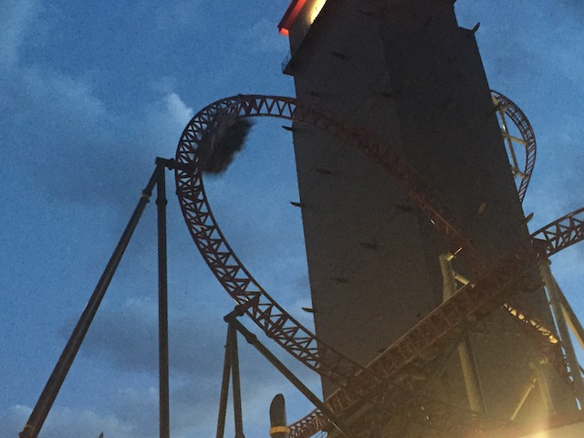
And of course, we have to close out another awesome day at Lagoon with their star attraction, Cannibal.
All right. Lagoon was fun. Final day, heading back to California. But hey. We still have time. I think I know of another place for us to stop on the way. =)
Yep. We're stopping at Kolab Canyon, which is basically part of the much more well known Zion National Park, except it's completely disconnected from the rest of Zion and not nearly as well known.
A guide to the specific trail we'll be hiking today. Taylor Creek Trailhead.
Let me translate these signs for you.
PICK UP YOUR F*CKING TRASH!!!
USE SOME BRAIN CELLS WHEN YOU HIKE!!
STAY ON THE TRAIL!!
DRINK WATER BITCH!! IT'S HOT TODAY!!!
THE FLOWERS ARE NOT HERE FOR YOU TO PICK SO YOU CAN USE THEM AS A SH*TTY ROMANTIC GESTURE!!! DON'T PICK THEM!!! AND YOU SUCK AT ROMANCE BTW!!!
STAY AWAY FROM MOUNTAIN LIONS!!! YOU WILL LOSE IN A FIGHT WITH THEM!!!
Whatcha city folks doing heading straight into nature!? This is our territory! Scram!
Let's try and get as deep in here as we can.
OK. I love it in here. Kolab Canyons is very nice and I'm glad we stopped.
You know, given how it's like 95 degrees outside today, I really wish we just splashed all that water in our faces. Would've been nice.
 Ooh. A quaint little cabin in the middle of the Kolab Canyon.
Ooh. A quaint little cabin in the middle of the Kolab Canyon.
You can't actually go inside, but it was cool to just see this cabin in the middle of the trail.
OK. A.J has never been to a Cracker Barrel. So we have to stop at the one in St. George.
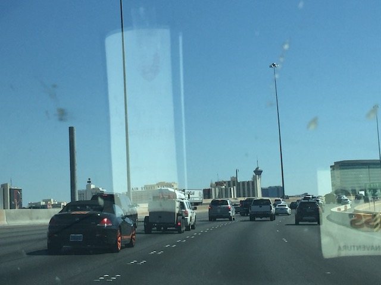
And we're back in Cody's favorite place in the world. Las Vegas.
Shh! If you're really quiet, you can hear the sobbing of gamblers who just lost their life savings.
But instead of stopping to ride El Loco or Desperado, we decided to do something different and hit their water park, Cowabunga Bay.
 Hey, they have some intersting and unique slides. And they're not that much more expensive than a ride on either El Loco or Desperado (Though only if you go for Summer Nights. But still, shows how expensive both have become).
Hey, they have some intersting and unique slides. And they're not that much more expensive than a ride on either El Loco or Desperado (Though only if you go for Summer Nights. But still, shows how expensive both have become).
I know the owner of this park (and the other Cowabunga Bay in Utah) is a coaster enthusiast as well. And I have to admit. He really did a good job with this place. =)
 All right. Let's start out with the most intersting slide in this complex. Surf-A-Go Go. It's the pink one with what are apparently called Rebound Chambers. Apparently, it's a Polin Space Shuttle slide. It honestly looks like a tantrum. Something similar to Dr. Von Dark. And just like Dr. Von Dark, it's one of those slides that is unique, rare, and looks amazing, but it only rides OK. So yeah. This is basically the water slide version of Tulireki.
All right. Let's start out with the most intersting slide in this complex. Surf-A-Go Go. It's the pink one with what are apparently called Rebound Chambers. Apparently, it's a Polin Space Shuttle slide. It honestly looks like a tantrum. Something similar to Dr. Von Dark. And just like Dr. Von Dark, it's one of those slides that is unique, rare, and looks amazing, but it only rides OK. So yeah. This is basically the water slide version of Tulireki.
 OK. Let's go over the other slides in the complex.
#1. Rock-A-Hoola, which is a tube toilet bowl. It's always better to have a body toilet bowl like Bazooka Bowls. But as far as tube bowls go, this was my favorite one. Not only did we get several spins in the bowl, but the drop out of the bowl is actually of a decent size.
#2. Breaker 1-9. The Green Slide. Fun slide, but it'd be better without trims.
#3. Point Panic. The Blue Slide. Honestly, this slide was my favorite slide of the complex. It has lots of laterals, the paint job inside is really cool, and it makes it feel even faster, and we wiped out at the pool. I loved it.
OK. Let's go over the other slides in the complex.
#1. Rock-A-Hoola, which is a tube toilet bowl. It's always better to have a body toilet bowl like Bazooka Bowls. But as far as tube bowls go, this was my favorite one. Not only did we get several spins in the bowl, but the drop out of the bowl is actually of a decent size.
#2. Breaker 1-9. The Green Slide. Fun slide, but it'd be better without trims.
#3. Point Panic. The Blue Slide. Honestly, this slide was my favorite slide of the complex. It has lots of laterals, the paint job inside is really cool, and it makes it feel even faster, and we wiped out at the pool. I loved it.
 They have a trap door slide here. Sadly, it's another helix one (I really want another straight drop one like Blue Bonzai Pipelines). But to it's credit, it's definetly the best Trap Door Helix Slide. It's the biggest, it has the most drop before you level out, and while there's definetly some waterboarding in the helix, it also has some laterals and is fun.
They have a trap door slide here. Sadly, it's another helix one (I really want another straight drop one like Blue Bonzai Pipelines). But to it's credit, it's definetly the best Trap Door Helix Slide. It's the biggest, it has the most drop before you level out, and while there's definetly some waterboarding in the helix, it also has some laterals and is fun.
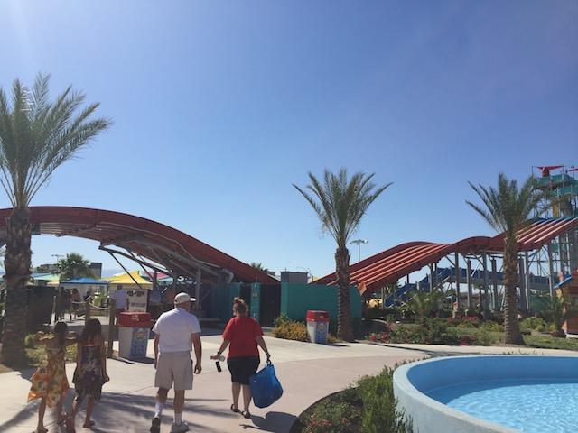
Hmm. Something's different about their Mat Racer slide here. But I just can't put my finger on it.
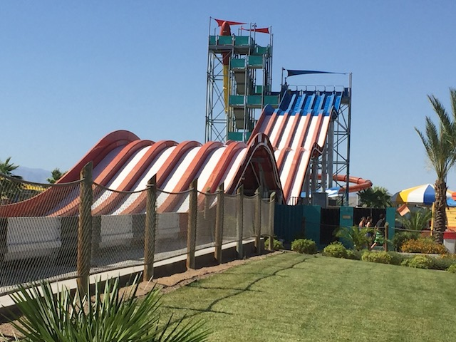
Oh yeah. There's a big hump at the end you have to get over. So you're less concerned with kicking your friends ass on this slide and more concerned about just making it over the hump. I made it over, but I crawled at the top. But still! I made it! I'm not sure this was located at some other random water park in the world that Shane found and he just took the idea and put it in Cowabunga Bay, or if he came up with it himself. Either way, I love it.
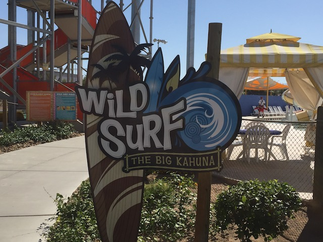
OK. We still have Wild Surf. Let's see how that is.
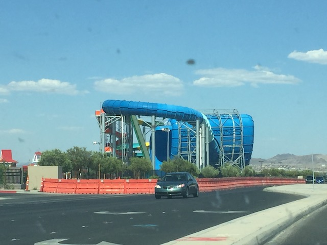
OK. What the hell is that thing?
 It looks like some sort of...Tornado knock off. Apparently, this thing is called a Surf Safari, it's the first one ever built, and it's Polin's response to the Tornados by Proslide. Hell, all of the slides here are from Polin, which is why they're unique as they're primarily a European company that does most of their business there. And it's really fun. Hard for me to say whether I prefer this or the Tornados. I guess it really depends on how it's balanced for both. But I still really like that there's something different here.
It looks like some sort of...Tornado knock off. Apparently, this thing is called a Surf Safari, it's the first one ever built, and it's Polin's response to the Tornados by Proslide. Hell, all of the slides here are from Polin, which is why they're unique as they're primarily a European company that does most of their business there. And it's really fun. Hard for me to say whether I prefer this or the Tornados. I guess it really depends on how it's balanced for both. But I still really like that there's something different here.
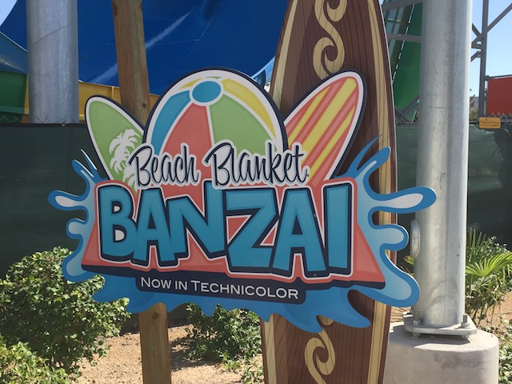
And finally, we have their family raft ride to check out.
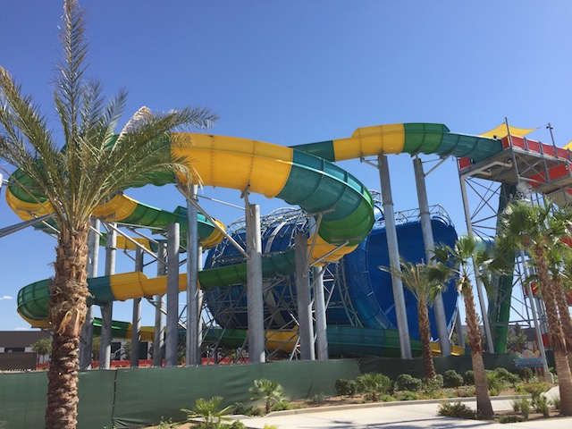
It was fun, though it can probably be even better if we had more fatties riding with us.
And that was our Silverwood/Lagoon Road Trip. We explored a lot, checked out a fun new park, returned to a classic favorite of ours, explored a lot of nature as we checked out three National Parks, saw lots of bison, got 4 new state credits, did a lot of driving, and just had an excellent time. Hooray for mini road trips! =)
Home
|